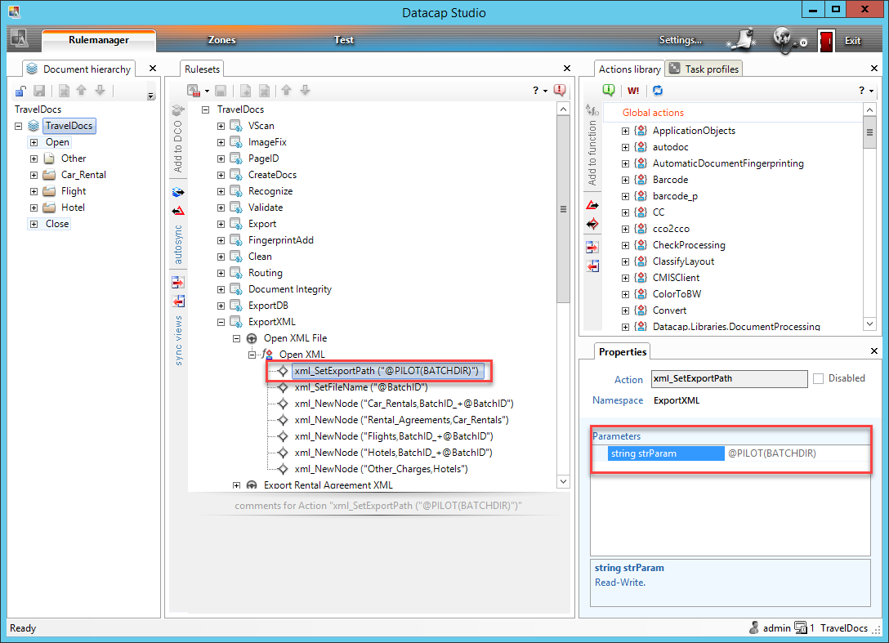

Datacap Utils Toolkit
Datacap Utils Toolkit is a collection of re-usable artifacts useful for integration with IBM Datacap REST services from IBM Business Automation Workflow.
Repository: https://github.com/apollo-business-automation/datacap-utils-toolkit
API: https://apollo-business-automation.github.io/datacap-utils-toolkit/
Description
The toolkit provides integration with Transactions which are provided via the Datacap Web Services REST API documented at https://www.ibm.com/docs/en/datacap/9.1.9?topic=reference-datacap-web-services-rest-api-methods
Content of the toolkit
- Service flows – wrappers for transaction API calls
- Session Logon
- Session Logoff
- Transaction Start
- Transaction Execute
- Transaction End
- Transaction Set File
- Transaction Get File
- Sample transaction flow for TravelDocs application which comes out-of-the-box with Datacap.
- Recoding of files from UTF-16 LE BOM and UTF-8 BOM to UTF-8
- Sample process with a task allowing:
- Upload and select document
- Select the transaction REST endpoint
- Call the transaction flow and see the output
Making Traveldocs Datacap application ready for transactions
A slight adjustment of the Datacap application is needed in order to make it ready for transactions.

Instructions:
- Open TravelDocs application in Datacap Studio.
- Select and lock ruleset
ExportXMLfor editing. - Navigate to the action following the screenshot below.
- Update value of the action parameter on the right hand side to
@PILOT(BATCHDIR) - Save the changes and publish the ruleset.
Usage
- Import the release twx file into Workflow Center
- Start process
ZTest Datacap Transaction - Run task
ZTest Datacap Transactionand open the task screen - Select one of the sample files already attached to the process instance or upload your file.
- Review the REST endpoint configuration and update it if needed.
- Select conversion from the proper UTF encoding. It may differ depending on on configuration of your Datacap.
- Click the button to call the transaction.
- See the output.
You can adjust the REST endpoint in CSHS ZTest Datacap TravelDocs Cshs Coach. Edit the script called Init.